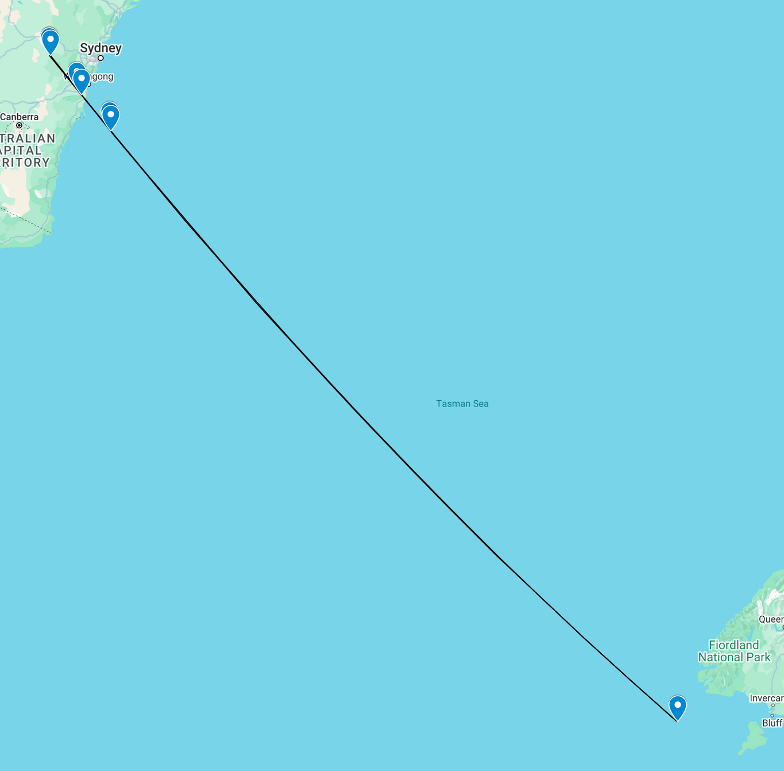
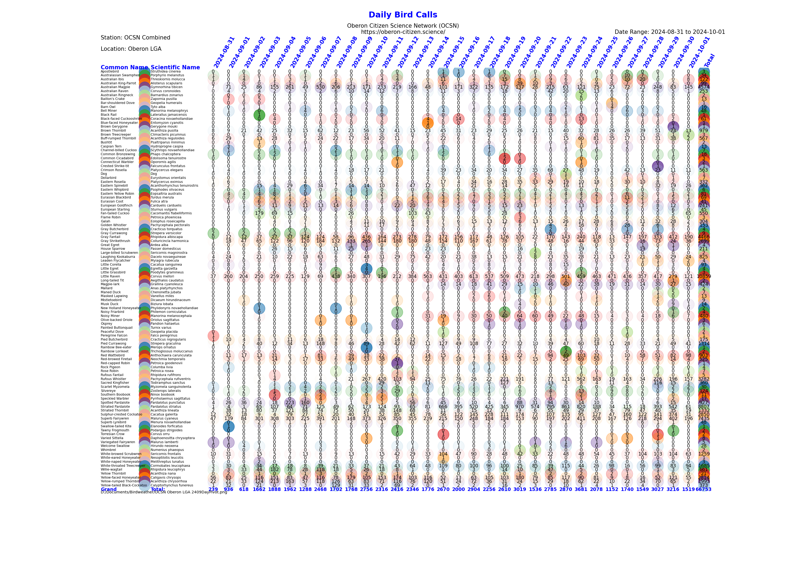
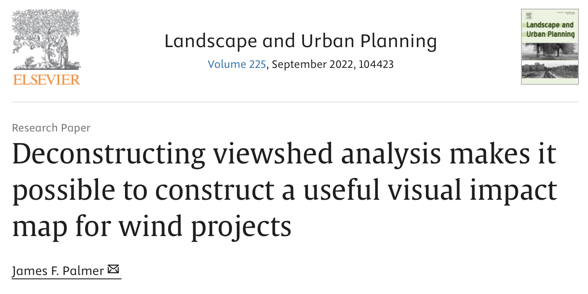
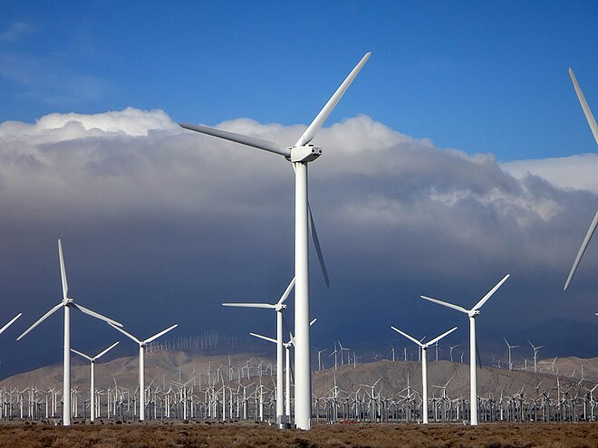
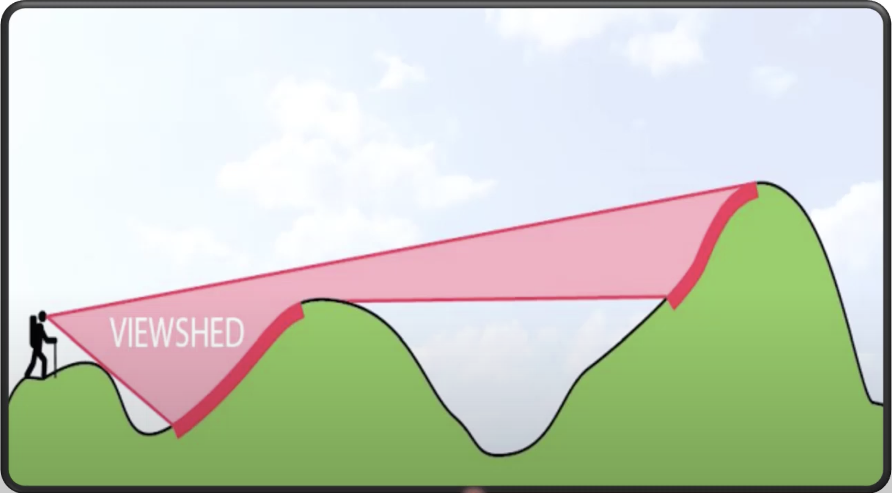
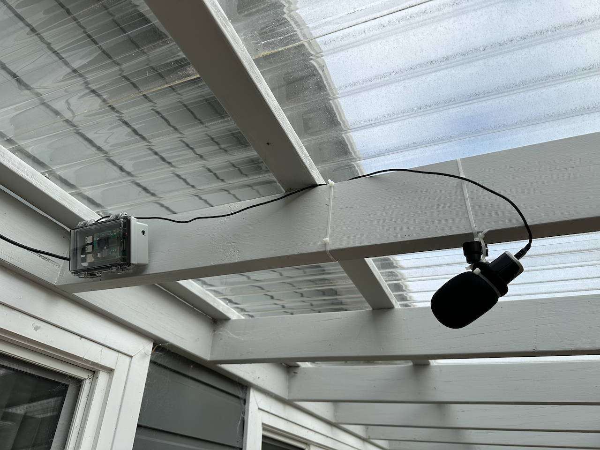
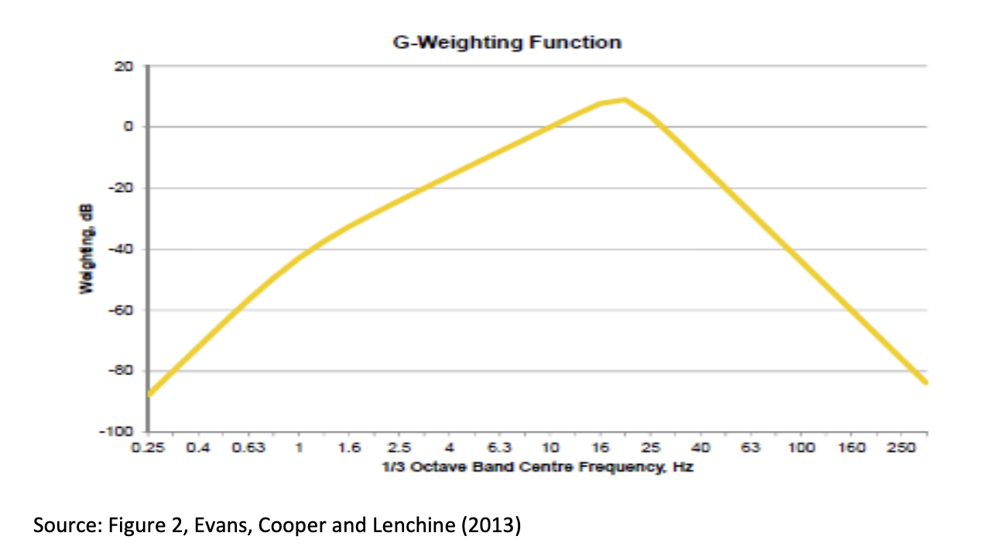
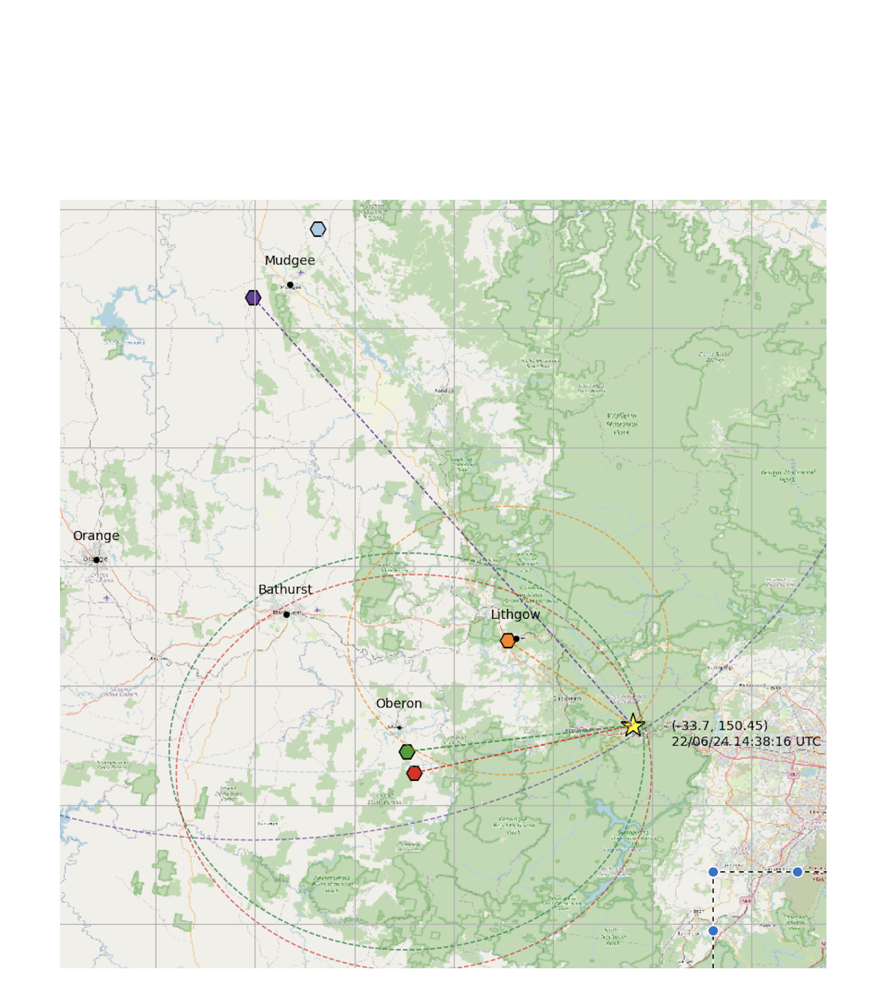

Oberon Citizen Science Network
About
Welcome to OCSN
What is Citizen Science?
Mission Statement
Articles of Association
Code of Conduct
Privacy Policy
Upcoming Events
Activities
FrogID
Platypus & rakali surveys
Koala surveys
Astronomy
Citizen science and wind farms
Sensor Networks
Seismic and infrasound monitoring
Meteor detection and tracking
Bird call detection and counting
Eco-acoustics
Local weather monitoring
Air quality monitoring
LoRaWAN and NB-IoT
News
Blog posts
All-sky camera
Gallery
Become a member!
Source Code
Report an Error
OCSN Blog Posts
Introductions
Welcome to OCSN
What is Citizen Science?
Mission Statement
Articles of Association
Code of Conduct
Privacy Policy
Join us!
Email
Activities
Upcoming Events
FrogID
Platypus & rakali surveys
Koala surveys
Astronomy
Wind farms
Citizen science and wind farms
Visualising the proposed Pines Wind Farm
Sensor Networks
Seismic and infrasound monitoring
Meteor detection and tracking
All-sky camera (beta)
Bird call detection and counting
Eco-acoustics
Local weather monitoring
Air quality monitoring
LoRaWAN and NB-IoT
Categories
All
(9)
Birds
(2)
Data analysis
(2)
Infrasound
(2)
Local earthquakes
(1)
Review
(1)
Seismic analysis
(1)
Technical Reports
(1)
Technology
(1)
wind farms
(4)
OCSN Blog Posts

Oceanic Infrasound-stimulated seismic wave
Infrasound
Seismic analysis
Data analysis
An investigation of unusual seismic signals associated with the magnitude 6.7 earthquake which occured off the southern coast of New Zealand on 25 March 2025.
Mar 30, 2025
Alan Sheehan

Reports from the Oberon Citizen Science Network bird call monitoring network
Birds
Data analysis
A short report on ongoing work into developing custom, automated reports for the growing network of BirdNET-pi and Birdweather PUC bird call detection devices deployed in Oberon LGA by OCSN members.
Oct 3, 2024
Alan Sheehan

Wind farm visual impact assessment – part 4
wind farms
An exploration of methods for assessing the visual impact of proposed wind farms, in several parts. In this post we compute the visual impact assessment metric proposed by James F. Palmer, using the proposed Paling Yards wind farm as an example.
Sep 19, 2024
Tim Churches
Wind farm visual impact assessment – part 3
wind farms
An exploration of methods for assessing the visual impact of proposed wind farms, in several parts. In this post we scale up computation of compound viewsheds to encompass entire wind farms.
Sep 18, 2024
Tim Churches

Wind farm visual impact assessment – part 2
wind farms
An exploration of methods for assessing the visual impact of proposed wind farms, in several parts. In this post we consider compound viewsheds.
Sep 17, 2024
Tim Churches

Wind farm visual impact assessment – part 1
wind farms
An exploration of methods for assessing the visual impact of proposed wind farms, in several parts. The concept of viewsheds is introduced in this post.
Sep 16, 2024
Tim Churches

Birdweather PUC Review
Birds
Technology
Review
If you are considering electronic monitoring and identification of birdcalls, this review may help you decide if a Birdweather PUC is the right choice for you or not.
Jul 21, 2024
Alan Sheehan

G-weighting infrasound data
Infrasound
Technical Reports
Infrasound data captured by devices such as the Raspberry Shake & Boom needs to be G-weighted to properly reflect the sensitivity of the human ear (and body) to the low frequencies present (by definition) in infrasound. This is a technical article documenting some progress in doing this weighting.
Jun 24, 2024
Alan Sheehan

Minor earthquake in Hazelbrook
Local earthquakes
An M1.6 earthquake near Hazelbrook in the Blue Mountains was detected by seismic sensors operated by OCSN members
Jun 23, 2024
Alan Sheehan
No matching items